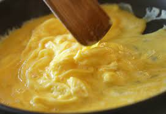
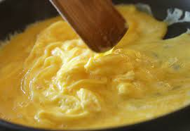

Origin: China
Source: Alex Ni's Recipe
Category: Main Dish

Tomato and eggs is a hot dish which originated from China. It is a simple and fast dish to make, but it has good nutritional value. It is a very satisfying food to eat and popularly served with rice and topped with green onions.
Recipe Ingredients
- Tomatoes
- Eggs
- Salt
- Sugar
- Cooking Oil
Recipe Steps
- Crack eggs into a bowl and mix until scrambled.
- Cut tomatoes into pieces around the size of your thumb.
- Oil a hot pan and cook the eggs until satisfied then remove the eggs.
- Re-oil the pan and cook the tomatoes until they loosen.
- Combine eggs and tomatoes and season with salt and sugar.
Additional Images

 
